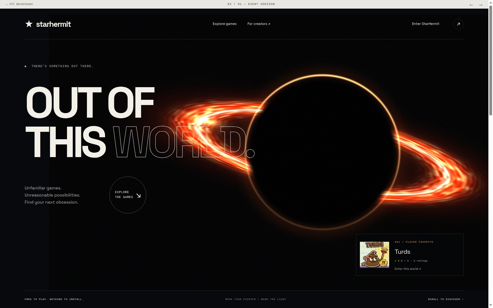
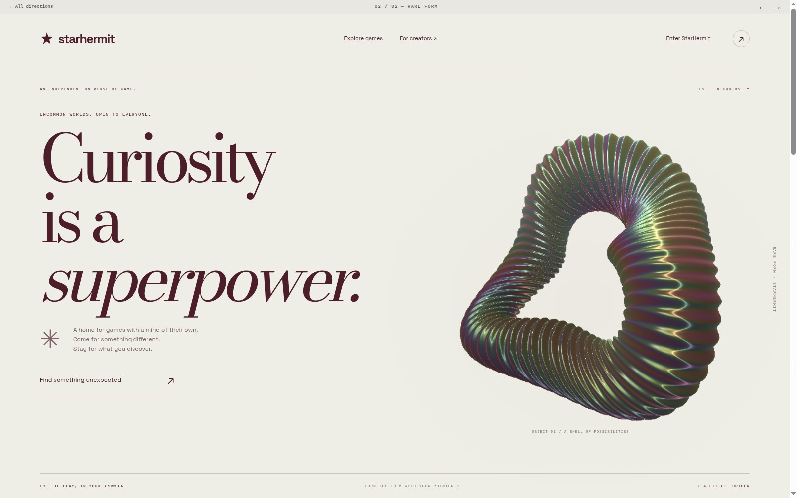
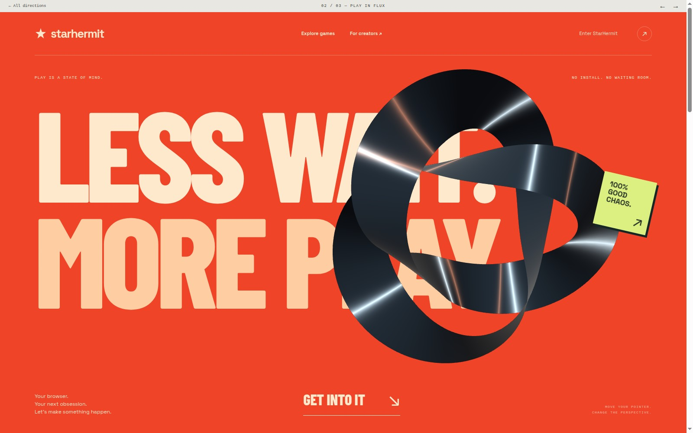
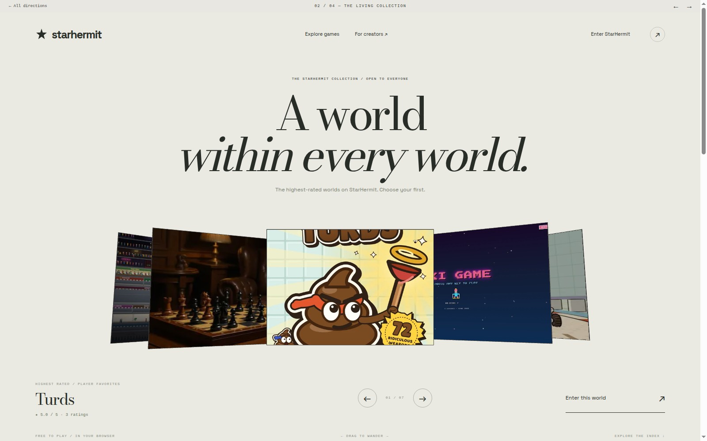
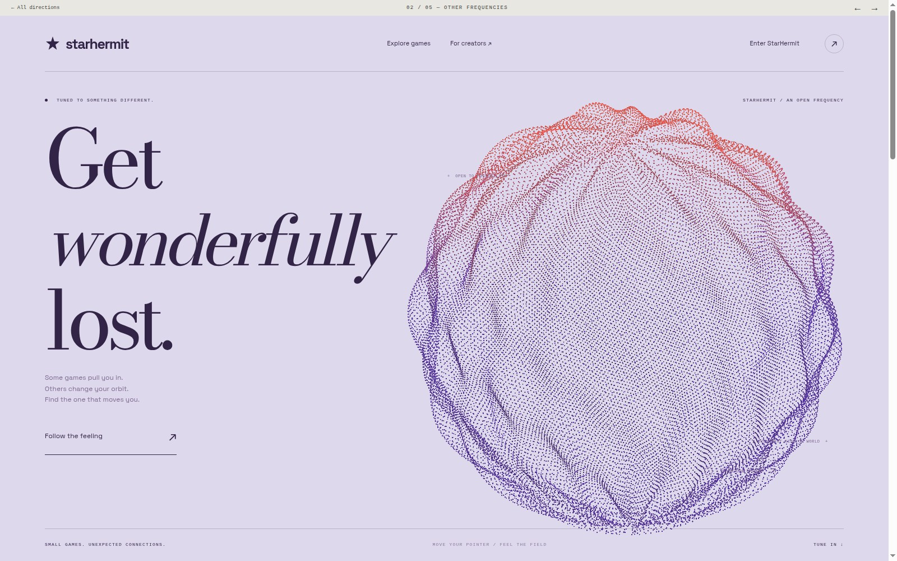

Enter the experience ↗01
Cinematic / Gravitational / Immersive
Event Horizon
A luminous accretion disk bends around a dark center. The scene reacts to your pointer.
A cinematic first impression
ART DIRECTION. REAL-TIME GRAPHICS. A LITTLE MORE AMBITION.
Five new experiences for StarHermit. Sculptural forms, cinematic light, kinetic typography and worlds you can move through.
Open each page to experience its live WebGL scene.
Enter the experience ↗Cinematic / Gravitational / Immersive
A luminous accretion disk bends around a dark center. The scene reacts to your pointer.

Enter the experience ↗Sculptural / Editorial / Iridescent
A ray-marched shell with ribbed surfaces, studio reflections and shifting interference colors.

Enter the experience ↗Kinetic / Typographic / Chrome
A three-dimensional twisted ribbon rotates and reflects a virtual studio. Move around it.

Enter the experience ↗Spatial / Curated / Interactive
Actual game artwork in a three-dimensional carousel. Drag it or use the arrow controls.

Enter the experience ↗Generative / Expressive / Reactive
A world built from 32,000 particles. Change its shape, and move the pointer to explore.
YOUR CALL
Try the scene interactions. Scroll beyond the first screen. Then consider which feeling you want people to associate with StarHermit.
Your shortlist and notes stay in this browser.